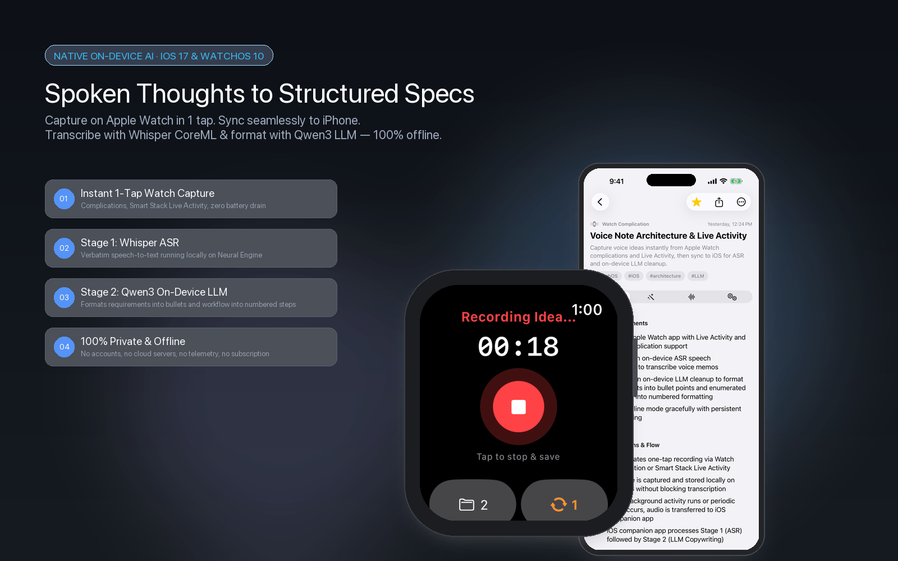
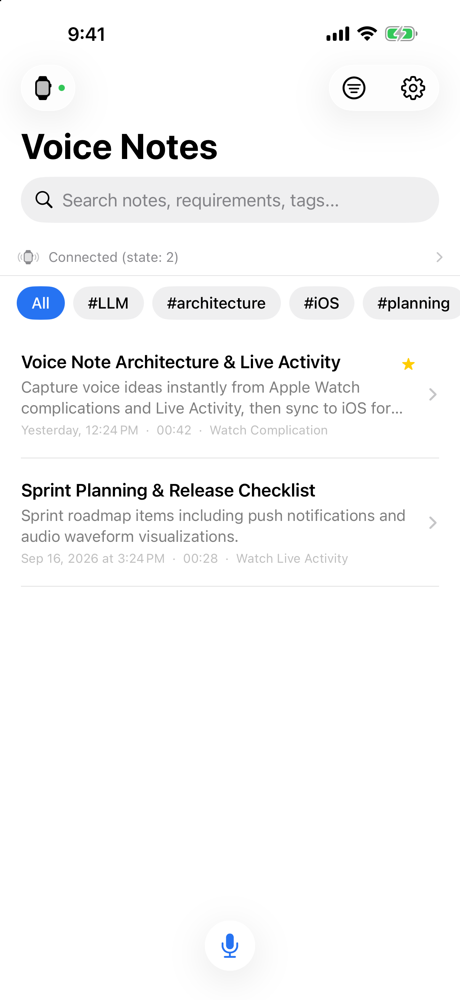
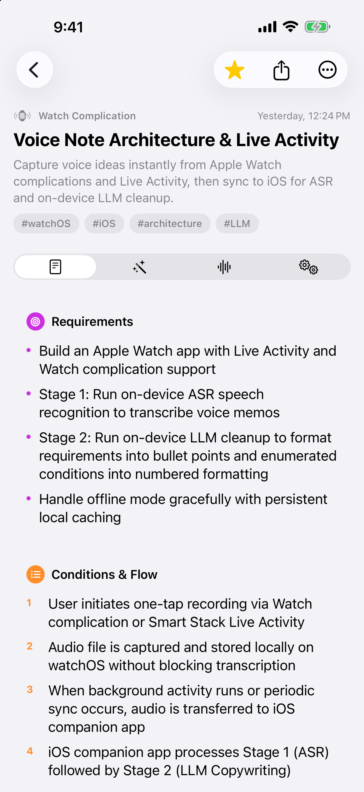
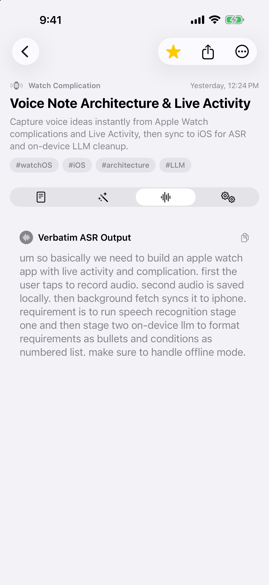

Spoken thoughts into
structured engineering specs.
Capture rambling voice ideas instantly on Apple Watch, iPhone, or Mac. Decoupled two-stage on-device pipeline transcribes verbatim with WhisperKit CoreML and synthesizes Markdown specs via Apple Intelligence. Zero servers. Zero telemetry.

The Two-Stage On-Device Transformation
Experience how disorganized verbal brainstorming transforms into structured engineering specifications with zero cloud round trips.
Decoupled Hardware Dispatch Pipeline
Zero cloud servers, zero network sockets. Every stage maps directly to Apple Silicon hardware blocks for maximum energy efficiency and complete privacy.
Engineered for Technical Builders
No accounts, no subscriptions, no cloud latency. Native Swift tools for engineers, architects, and product leads who think out loud.
Decoupled Two-Stage Intelligence
Speech recognition is strictly decoupled from LLM summarization. Stage 1 executes WhisperKit CoreML for verbatim acoustic decoding, producing an immutable transcript audit trail. Stage 2 executes the native Apple Foundation Model by default (with opt-in Qwen3 via MLX Swift) to generate structured technical requirements, condition trees, and actionable task checklists.
Apple Watch Standalone
One-touch complication on your watch face (Circular, Corner, Rectangular, Inline) captures ideas instantly without waiting for iPhone. Preserves battery with offline AAC encoding, automatically syncing in the background when in range.
macOS Menubar & Global Hotkey
Press ⌥ Space anywhere in macOS to trigger a floating recording HUD. Dictate stream-of-consciousness thoughts; Voxbrief processes the spec locally and uses accessibility synthetic events to paste structured Markdown directly into VS Code, Xcode, or Obsidian.
Personal Technical Dictionary
A built-in regex word-boundary filter guarantees custom domain jargon, acronyms, and proprietary library names (e.g. CoreML, Kubernetes, gRPC, PostgreSQL) are strictly protected from speech recognition drift and LLM hallucination.
Air-Gapped Privacy Protocol
Your voice, notes, and architectural ideas never leave your device. Zero telemetry beacons, zero analytics trackers, and zero third-party cloud SDKs. Fully functional on flights, subways, and secure offline facilities.
Why On-Device Architecture Wins
Comparing local Apple Silicon inference against centralized cloud transcription and copywriting services.
| Metric / Dimension | Cloud Voice Recorders (Otter, Notion AI, Cloud Whisper) |
Voxbrief (100% On-Device AI) |
|---|---|---|
|
Data Egress & Storage
Audio file handling
|
Streamed to Remote Cloud
Raw audio streams and transcripts uploaded to external servers, subject to remote retention policies. |
Zero Bytes Sent (0 KB/s)
100% processed in local Apple Silicon unified memory and stored strictly in sandboxed local JSON storage. |
|
Offline Autonomy
Airplane mode & connectivity
|
Requires Internet Access
Fails completely without Wi-Fi or cellular reception. Inoperable on flights, trains, or secure offline labs. |
Full Offline Autonomy
Complete ASR transcription and LLM spec synthesis run locally without any network connection. |
|
Telemetry & Trackers
User surveillance footprint
|
Multiple Analytics SDKs
Product analytics, crash analytics, and user identification trackers embedded in binary. |
Zero Tracking Beacons (0)
No Google Analytics, no Mixpanel, no Sentry, no telemetry. Pure Swift native code. |
|
Hardware Acceleration
Compute execution
|
Server Queue RTT
Latency depends on network round-trip time, remote server load, and API rate limits. |
Apple Neural Engine + Metal
WhisperKit CoreML runs on ANE; Apple Foundation Model & MLX Qwen3 leverage Metal GPU shaders. |
|
Pricing Model
Monthly subscription cost
|
$10 – $30 / Month ($120–$360/yr)
Recurring billing, monthly token quotas, paywalls on export, and locked proprietary formats. |
100% Free & Open Source ($0)
Open source under MIT license. Zero subscriptions, zero token caps, zero credit card requirements. |
Native Interface Showcase
Engineered exclusively with SwiftUI for iOS 17+, watchOS 10+, and macOS 14+.



Inspect & Build from Source
Voxbrief uses XcodeGen and native Swift Package Manager. Clone, generate project files, and run the test suite in terminal.
# 1. Clone repository
git clone https://github.com/tianhaoz95/voxbrief.git
cd voice-note
# 2. Generate Xcode project via XcodeGen
xcodegen generate
# 3. Resolve WhisperKit & MLX dependencies
xcodebuild -resolvePackageDependencies -project Voxbrief.xcodeproj -scheme VoxbriefYour Thoughts Never Leave Your Silicon
Unlike commercial AI services that transmit your voice recordings and sensitive business ideas to third-party data centers, Voxbrief runs 100% locally on your personal Apple devices. No account creation, no analytics tracking, and no external servers.